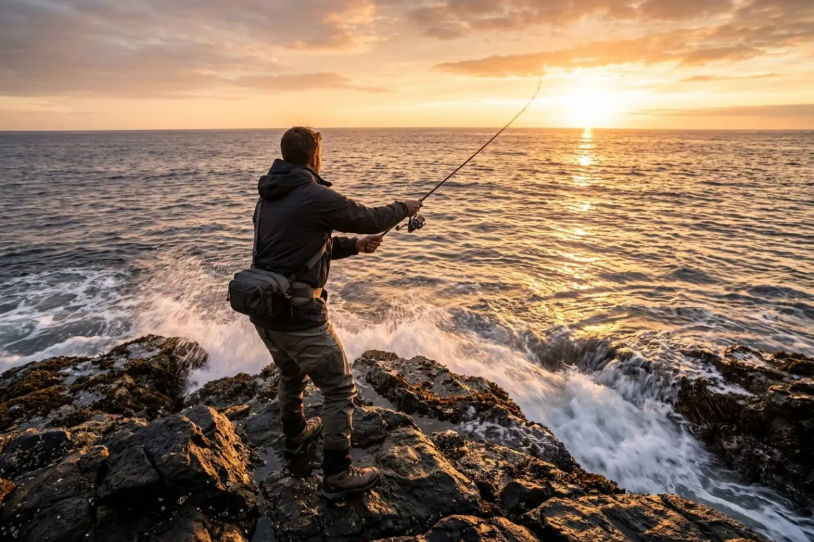
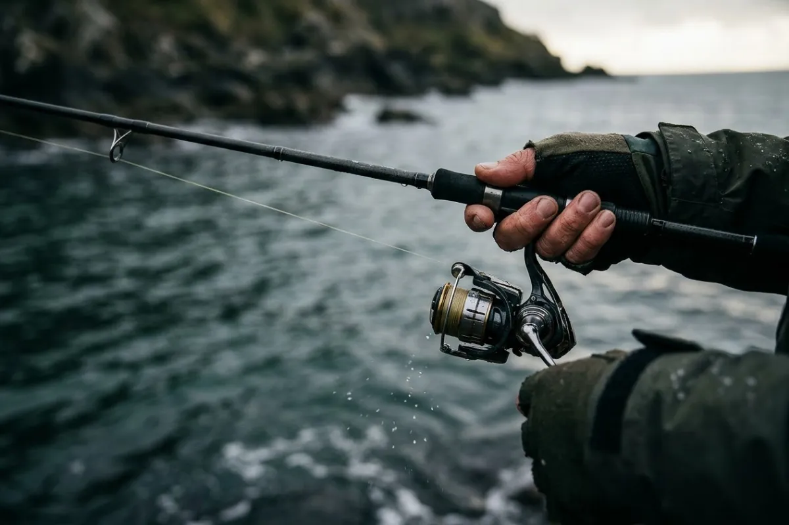
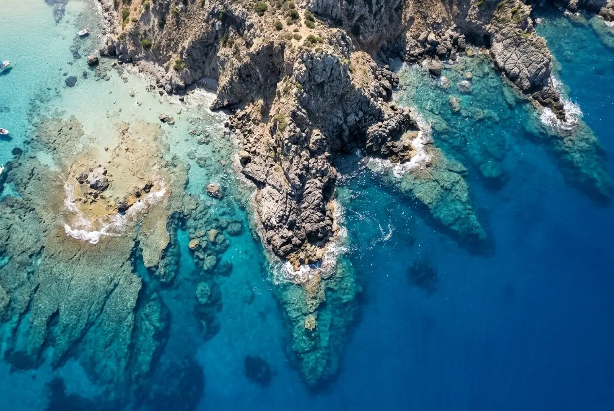
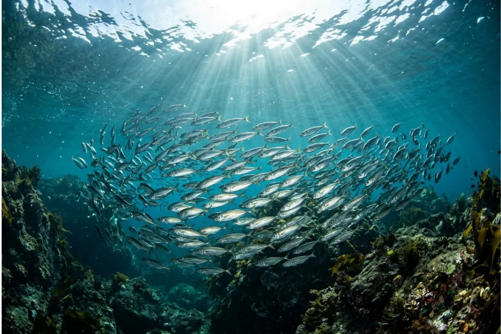

LRF Teknikleri
Aksiyon mühendisliği ve kamış ucu sihirbazlığı. Sahte yemlerinize su altında hayat verin ve predatör balıkları harekete geçirin.
Teknik Bilgi Neden Önemli?
Doğru ekipmana sahip olmak yeterli değildir, onu nasıl kullandığın sonucu belirler. LRF'de başarı, sabır, gözlem ve doğru tekniğin bir araya gelmesiyle gelir. Bu rehberde en temel teknikleri adım adım öğreneceksin.
LRF Avcılık ve Aksiyon Teknikleri

Atış Teknikleri
LRF'de atış tekniği, hem mesafeyi hem de hassasiyeti doğrudan etkiler. Tepeden (Overhead) Atış en yaygın yöntemdir; ancak dar alanlarda Yandan (Sidearm) Atış daha pratiktir.
- Kamışı dominant elinle tut, sahte kamış ucundan 25-35 cm aşağıda sarksın.
- Parmağınla misinayı tut, makine telini aç ve hedefi gözle.
- Kamışı geriye al, öne doğru hızlı bir hareketle fırlat ve hedef noktasında parmağını bırak.
- Sahte suya değdiğinde makine telini kapat ve misina gerginliğini hisset.

Çekiş (Retrieve) Teknikleri
Sahteyi suya attıktan sonra nasıl çektiğin, balığın onu avlanmaya değer görüp görmeyeceğini belirler. Farklı çekiş teknikleri farklı balık türlerini ve koşulları hedefler.
- Düz Sarım (Steady Retrieve): Sabit hızda sarım. Yüzey yakını veya orta su için idealdir.
- Stop & Go: Birkaç tur sar, dur, tekrar sar. Durma anında çoğu atış gerçekleşir.
- Kaldır ve Bırak (Lift & Fall): Kamış ucunu yukarı çek, aşağı bırak, sarım yap. Dip balıkları için etkilidir.
- Kamış Ucu Vuruşu (Twitching): Kısa, sert bilek hareketleriyle sahteye düzensiz hareket ver.

Doğru Nokta Seçimi
LRF balıkları genellikle yapısal noktalarda; kayalıklar, iskeleler, rıhtımlar, yosunlu alanlar ve akıntı kırıklarında bulunur. Doğru noktayı bulmak, teknik kadar önemlidir.
- Kayalık ve taşlık dipli alanlar: Kaya balığı, istavrit ve lahoz için ideal.
- İskele ve rıhtım ayakları: Gölge ve yapı, küçük balıkları çeker.
- Yosunlu ve algli alanlar: Küçük balıkların beslenme alanı, LRF için altın bölge.
- Akıntı kırıkları: Akıntının yavaşladığı noktalarda balıklar avlanmak için bekler.

Balık Davranışları
LRF'de avlanan balıkların davranışlarını anlamak, doğru teknik ve sahte seçimini kolaylaştırır. Su sıcaklığı, mevsim ve hava koşulları balık aktivitesini doğrudan etkiler.
- Su sıcaklığı 18-24°C arasında olduğunda balıklar en aktif dönemdedir.
- Rüzgarlı havalarda balıklar kıyıya yaklaşır; bu günler avantajlıdır.
- Ay takvimine dikkat et: Dolunayda su yüzeyi aydınlandığı için koyu siluet (siyah/mor), karanlık yeni ay gecelerinde ise Glow renkleri tercih et.
- Balık vurduğunda paniklemeden sakin bir şekilde kalama ayarını kullan ve balığı yor.
LRF ile Avlanan Balıklar
Türkiye kıyılarında LRF ile en sık karşılaşılan türler ve zorluk seviyeleri.
-
Kolay
Kaya Balığı
Goby- Kayalık dipli alanlar
- Yıl boyu
-
Kolay
İstavrit
Horse Mackerel- Açık su, yüzey yakını
- Yıl boyu
-
Orta
Lahoz
Grouper- Yosunlu, kayalık alanlar
- Yaz-Sonbahar
-
Zor
Çipura
Sea Bream- Karma yapılar, kumlu dip
- İlkbahar-Sonbahar
-
Orta
Lüfer
Bluefish- Açık su, akıntılı bölgeler
- Sonbahar-Kış
-
Kolay
Barbun
Red Mullet- Kumlu ve çakıllı dip
- İlkbahar-Yaz
-
Zor
Eşkina
Brown Meagre- Kayalık gölgeler, derin taş altları
- İlkbahar-Sonbahar (Gece avı)
-
Zor
Levrek
Sea Bass- Sığ sular, köpüklü ve dalgalı sahiller
- Sonbahar-Kış (Fırtınalı havalar)
Aksiyonları Çözdün, Şimdi Şov Zamanı!
Uzmanlık Rehberi ile sınırları zorla. LRF Akademi ile teorik bilgini derinleştir.